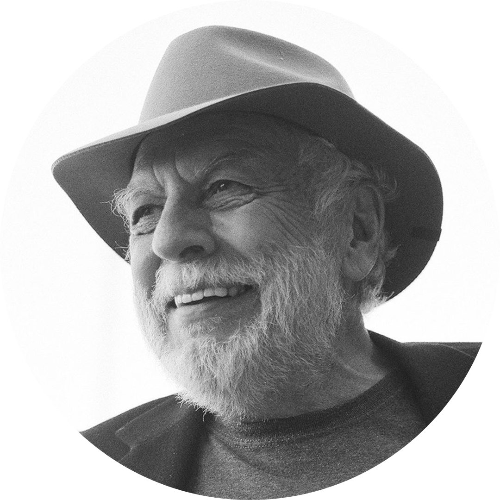
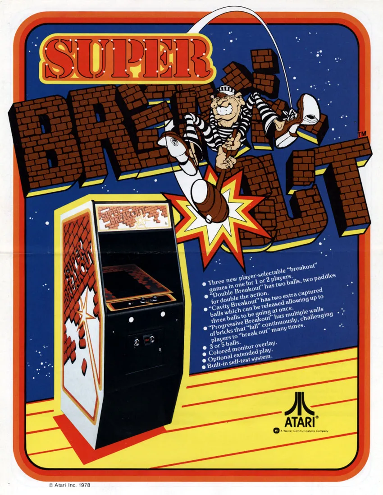

BREAKOUT
En la década de 1970, Atari, una compañía de videojuegos pionera, estaba en busca de su próximo gran éxito después del lanzamiento de Pong, el primer juego de arcade comercialmente exitoso. Fue entonces cuando el diseñador de juegos, Nolan Bushnell, y el ingeniero de software, Steve Jobs, se unieron para crear un juego que rompiera con los estándares de la época.
Así nació Breakout, un juego que se convirtió rápidamente en un clásico de la industria y que aún hoy es recordado con cariño. La premisa del juego era simple: un jugador controlaba una paleta en la parte inferior de la pantalla y tenía que rebotar una pelota para romper bloques en la parte superior de la pantalla. El objetivo era eliminar todos los bloques sin que la pelota cayera al vacío.
Lo que hizo que Breakout fuera tan innovador fue su enfoque en la mecánica de juego y en la física de los objetos en movimiento. Con la nueva técnica implementada "sprite", el realismo aumentó exacerbadamente, la jugabilidad pasó a ser más rápida y emocionante, convirtiendo al Breakout en una adiccion para muchos aficionados a los juegos retro y una inspiracion para toda una generación de diseñadores de juegos.

|
Steve Jobs |
|  |
Nolan Bushell |
|  |
Primera versión de Breakout |